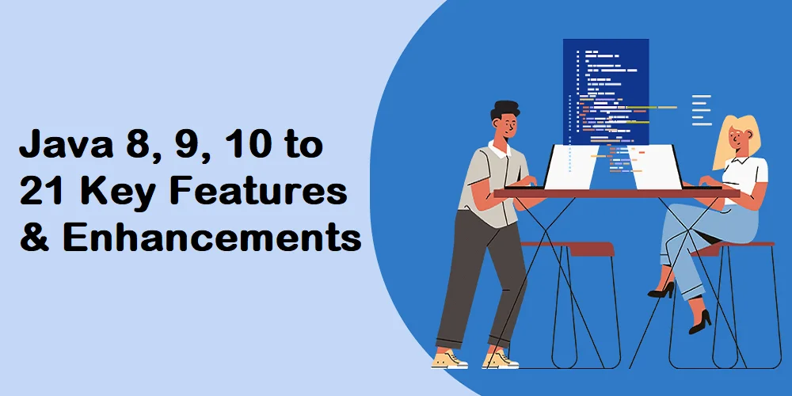

Java 8, 9, 10, 11 and beyond delivering new features to the JDK. JDK 8 had come up with so many new features like lambda expression, functional interface and so on. But post that Java 9 got released in 2017 with a very big change that is the introduction of modularity. Then after one year of Java 9, Java 10 got released in the year 2018 with some new features and some enhancements of local variable type and garbage collection. JDK 9 and JDK 10 are feature releases of Java. Feature release means we will get only two scheduled updates. Java 11 got released in 2018 where java has open-sourced some of its closed sourced parts of JDK through OpenJDK release. JDK 11 also has removed so many packages from it like Applets, JavaFX, Web start, etc.
Now Oracle has come up with a new release Model, that every 6 months there will be a release of a new major version of JDK. As the number of major releases of java will get increased, because of this Oracle, will not be providing long-term support for all the releases. Oracle has come up with a plan that only one Long term support release every three years. They have classified JDK 8 as an LTS (Long term support) release. But for commercial users (JDKs 8 usage in production), JDK 8 public updates stopped in Jan 2019.
Overview of Software Design:
Now let’s discuss some of the key features of all the latest versions of Java starting from JDK 8 till JDK 11. So, I will give a brief overview of all the main features of all the JDKs versions but the detail technical explanation of each features with programmatically explanation will be published in our coming blogs. Just go through the below concepts of the features of Java 8, 9, 10 and 11 for getting a better clarity on each feature and its usage.
Speak to experts at Aegis Softtech to remain ahead in the game of development. Call us for an urgent consultancy today.
Java 8 Features:
The below new features have been introduced in JDK 8:
Lambda Expression:
This is a powerful feature in Java 8 using which we can write a few lines of code and do a lot of work. The main goal of lambda expression is to introduce the benefits of functional programming in Custom Java Application Development. A lambda is an anonymous function in Java. That is, a function which does not have a name, return type and access modifiers. Lambda expressions are also known as the anonymous functions or closures.
Another example here with two parameters here:
Without Lambda:
With Lambda:
If the compiler can derive these data types, then we do not need to specify the types. (a,b)-> SOP (a*b);
There are various advantages of lambda. Using few lines of code, we can do a lot of work in java. And it is easy to implement anonymous inner classes. Also, we can pass lambda expressions as parameters to other methods which is very powerful as well. To implement lambda in Java 8, Java 8 introduces Function interface. We need to use functional interfaces to express lambdas.
Functional Interface:
If an interface has one and only one abstract method, then it is called as a function interface. And that abstract method is called a functional method. Example of inbuilt function interfaces are Runnable interface which has the run () method i.e. an abstract method. Another example is a Comparator interface in java which has the compareTo() abstract method.
Starting Java 8, we can also add default methods to the interfaces which I am going to explain in this blog also. We can define any number of default methods in a functional interface but there should be one and only one abstract method. Java 8 also provides us with an annotation called @FunctionalInterface. If we mark our interface with this annotation, then we can only define one abstract method in that interface. Here Compiler will raise error if we try to add more than one abstract method. Functional interface is required to implement lambda expression.
Default Methods:
Starting from Java 8, we are allowed to have default method implementations inside interfaces. We have to use the “default” keyword to create a default method. We can override our default method in our child classes, or we can use the default implementation if we do not want to override.
Here we have overridden the default method m1() in our child class. So, the output of the Test class if we run will be “m1 inside B”
Predicate:
A predicate is a function with a single argument, and it returns a Boolean value. To implement a predicate, we have to use the Predicate interface introduced in Java 1.8. It is a functional interface with only one abstract method that can take in any type of argument, but as I said it always, should return a Boolean value.
Since it is a functional interface, we can express it as a lambda expression.
We can use predicate when we have the requirement to evaluate a condition to filter similar or collections of objects.
Streams:
Using Streams, we can process the data in a declarative manner very similar to that of SQL. It makes very easy for us to process the data or objects inside a collection. These streams are not the same as java.io.streams, which meant for reading/writing files.
The Stream interface introduced in Java 8. The stream is an interface in java.util.stream package. We can get a stream on a collection by invoking the stream() method, which added to the Collection interface in java8. Once we have a stream to process the collection, we will do it in two steps.
The first step is configuring the stream. We can do the configuration in two ways. Filtering, wherein we invoke the filter() method, pass it a predicate which will evaluate into a Boolean expression as you already know what a predicate is. The object of the collections will be filtered out based on the predicate. Syntax of the Filter method is:
Filter() method will return, the stream which has the filtered-out object. The second way of configuring is using a map method. The map method on the stream again returns a stream, but this time it does not take a Boolean expression. But it takes a function instead.
This method will create a new collection or a new object for every object in the collection. So if you want to suppose if you have a requirement wherein you have to create a new set of objects or new sets of collections based on the input, then you will use a map. It will map each input to a corresponding output object. If you simply want to filter, then you use the filter method.
The second step is “Processing.” i.e., to process the data itself. The stream API provides various methods such as collect, count, sorted, min, max, etc. to process the data.
Java 9 Features:
Java 9 offers many cool features, with many additions to existing features.
Starting Java 9, we can define private static as well as methods inside an interface. And these private methods will be used by the default method in the interface.
Try with resource block was introduced back in Java 6. But we had to define all our resources to try to work within the front bracket. But Starting Java 9, we can define those resources anywhere in our code before the try block, and we can directly use those objects or resources inside the try. It is an enhancement made to try with resource block.
There are several enhancements made to the Streaming API. The new thing is that Java 9 brings in "Modules" which is a great way to code and configure your application. It also brings in http2 client, which makes it easy to make HTTP calls or restful calls from our java code.
In java 9, Linking is a great concept towards microservices app development. Using Linking we can link only those libraries that are required, for our application to work instead of bringing everything inside the JDK or a particular library, we can link only those libraries that are required for our application to function.
Java 9 introduces JShell. It gives us a Shell type environment of our own where we can type in our java snippets.
Instance Private Methods and Static private Methods in Interface:
Starting from Java 9, we can create private methods in an Interface and can also use that private method inside of the default methods so that they can reuse certain functionality i.e, common across them.
The private methods inside our interfaces can also be static. The use of the static method is when one of the default methods is, static then in that, the case if we have to call the private static method from the static default method.
Improved try with resource Blocks:
The try with resource block which was introduced in Java 1.6, in that we cannot use the resources that defined outside this try with resource block like below:
It will give you an error. But starting from java 9, we can define our resources anywhere in our code which are auto closable then we can use them directly in the try block like the below:
Immutable Collection:
Before java 9, if we want to create an immutable Sets, Lists, and Maps i.e. immutable collections, then we have to create that collection first and then pass that collection to the “Collections.unModifiableSet/List/Map() “ methods which are a long process. Java 9 simplifies things for us like below:
List
@SafeVarargs Enhancement:
Before Java 9, we could use the safe variable arguments annotation only on static methods and on final methods and not on Private methods. Starting Java 9, we can use this annotation on Private instance method as well.
New Methods in Streaming API:
The streaming API that was introduced in Java 8 gives us great way to manipulate collections. Java 9 introduces more methods to the streaming API. It enhances the streaming API methods like “takeWhile()”, “dropWhile()” and a static method called “ofNullable()”.
JSHELL:
Another cool tool that was introduced in Java 9 is the Java Shell or the J Shell. JSHELL is a REPL tool which stands for read, evaluate print and loop. Without creating any java classes with main method, we can quickly start typing our java code and see the output of it. Under your JDK, if you go to the bin folder then you will find jshell. You can use it directly from your terminal window and type in Jshell. Then you can enter into jshell mode and try and test your java code.
Modules In Java 9:
Java 9 introduces java platform module system. A module is a bunch of packages. It is just like a jar file except for it comes with a module-info.java. So, every module we create will have a module-info.java which can use two different things inside it i.e. a “export” and “requires”. These two offers a lot of advantages over a jar file. So, using export we can say which packages inside this module we want to expose out to which other modules. Using “requires”, we can depend on another module.
We have to specify what other modules packages this module needs. It was not possible in case of a jar file. Using modules we can specify what all are required right before the application runs so that the JVM will check if everything and then only it starts the app. So, using modules we can get rid of “noClassDefFoundError”.
With modules, we can exactly specify which version of the dependency we want. In Jar file, everything is public, whatever is there in a Jar file. We cannot restrict. But modules give us additional security where we can tell which functionality within this module should be exposed out to which another module. In earlier Java, they have rt.jar which, have all the dependencies, but now in java 9, they have split them across the modules.
Qualified Export:
When we are exposing out or exporting certain packages from within a module, we can qualify them at the end so that they are available only to certain modules we want and not to the other ones.
Java 10 Features:
Unlike Java 9, Java 10 is a minor upgrade. It only has a couple of super cool features we will discuss here. The first feature is defining your variables using the “var” keyword like JavaScript but not exactly like JavaScript. The second feature is there are minor upgrades to the Collectors API. So, when you do the streaming on the collections, you can now create an unmodifiable list or set.
There will be releases every six-month going forward. Earlier before java 10, there used to be released once every three years or two year.
Using Var keyword to declare variable:
In java 10, if we want to declare an integer variable or a float variable then, we do not use to specify the type, and simply we can use the “var” keyword and can assign the value. Ex:
var is an inferred type. If we define the variable using the var keyword, the compiler will infer the type. If after assigning one value to x here and then if you want to again assign a different type like x=”xyz”, then the compiler will throw an error. But this “var” is not a keyword actually because in java if you create a variable name as “var” then it will not show any error. This is for backward compatibility java has made like this.
Collectors API changes:
Java 10 has come up with some enhancements in the Collectors APIs. Suppose I will explain with an example. Suppose we will create a list of integers using List.of() method like below:
Now suppose we want to filter out all the values inside the list which are multiples of 3. So, we can use List
But if we want to restrict this newList so that we cannot do [newList.add(30)]. There were no such restrictions before Java 10.
So, to make a list unmodifiable, then in Java 10, Collectors have a new method called “toUnmodifiableList or set or map. So, we can write our code like the below:
Java 11 Features:
Java 11 shows the advantage or the power of frequent small releases. We as, expert Java developers, now need to master only a few features at a time, but the features are very good. The first two features revolve around Strings, and then we have a feature on the optional class, then some deprecations and removals.
String API Updates:
IsBlank() method: This has added to the String class. If a Java String has any number of blanks inside it then, this method will return true. Even if the String contains a single blank (white space) also (String str=” ”); then, the isBlank() method will return true. If the string has at least one character with any number of blanks (white spaces), then the method will return false. So, the new IsBlank() method helps us with the blank Strings.
Lines(): This new method in Java 11 returns a stream of Strings by splitting the string using the new line character when the string has a new line character inside it. For Ex.:
As the lines() method returns a stream so we can write our code using Collector like below:
So, the output we will get is: [I, am, the, creator of this Blog]
So here the lines method returns a stream of Strings which we are putting into a list. The lines method splits the string wherever the new line character is present.
Strip method(): The existing trim method does not have Unicode support. Suppose I will append a white space in Unicode (“\u2000”) to a String, then the trim method cannot remove the white space.
So, to remove the Unicode white space, java 11 introduces a new method called strip() which, removes the Unicode white space. There are two variations of strip method i.e, “stripLeading()” method and another one is “stripTrailing()”. So, these two methods are for removing leading white spaces and trailing white spaces, respectively.
Repeat() method: So, java 11 introduces repeat() method. If we want to repeat a particular string for n number of times, then we can use this repeat () method. Ex: System.out.println(“-“.repeat(100));
It will repeat the “-“character for 100 times and will print in the output console.
File API Updates:
Java 11 makes it super easy to read and write strings to and from a file. File has the “WriteString()” method which takes a path as input that is the file path and their character sequence i.e. nothing but a string of characters that want to write in a file. This method returns a file path where the file gets created. For Ex:
So here this, “writeString()” method returns a path on which the file created to which it will write the content in a single line.
Now for reading the contents of that file, java 11 provides another method called “readString()” which read the contents of a file and returns the String.
IsEmpty() method on Optional Class:
Java 11 also provides isEmpty() method on Optional class. It is very useful when you are working with reactive programming when you work with spring. Where when it returns an Optional type, then we can check if it is empty using the isEmpty() method.
The above line will create an empty optional String. Before java 11, if you have to check in the above line if the “str” variable has a string inside it or not, we will have to use the “isPresent()” method to see if the str variable has the string value inside it.
Now in Java 11, we have isEmpty() method for this. Now if we have to execute certain logic on the basis of the str variable has some value or it is empty then we can directly use this “isEmpty()” method. In our case “str.isEmpty()” will return true. So, in another example below:
//This will return false as the str variable is not empty. it contains the string “mano”.
Deprecations and Removals:
Like every other version, there are some deprecations and removals in Java 11. Java 11 has removed certain packages like java.xml.ws, java.activation, java.transaction, java.xml.bind and java.corba. All these packages and classes were part of the JDK earlier. All these were deprecated in an earlier version of java bit in JAVA 11 they are completely removed. So, your code will not compile if you are using any of these if you are relying on JDK. But if you have a maven project then you can grab these dependencies from the maven repository, and you can still use them. But these are no longer part of JDK in Java 11.
Java 12
Introduction
Java 12 has been offering new languages as well as features especially API as well as clean-up techniques. One of the quiet characteristics comprises Unicode eleven and maintenance as well as the performance of a switch appearance.
1. Micro benchmark Suite
Java 12 presents a set of more than a hundred micro-benchmark examinations of its Java sourcing coding. Such tests would let for unceasing presentation challenges on the JVM and would develop to be valuable for each programmer wanting to function towards the java and make a newer microbenchmark.
2. Defaulting Class Data Sharing Records
This fresh feature aids in lessening the beginning time as well as reminiscence footmarks among several Java Virtual Machines. They help in using a building time that has been created with the defaulting class list which comprises the chosen essential library programs.
3. JVM numbers API
JVM API aids for the one agenda which can operate programmers and techniques. Such plans require perfect byte code commands and switch pluggable variables. Numbers of this kind whether it is String or Integer can function properly. Though, it develops complicated with a Continuous kind type of class. Stacking training could nosedive if Period is unreachable or not present. With the fresh API in place, borders can switch continuous standards emblematically thus removing the difficulty.
Example
Example (Switch expression show)
This is the improvisation that could be oldstyle or basic. Having behavior that is controlled. It offers design corresponding for the recurring mutable.
We could make use of case L or disruption for recurring a worth after a change in Java 12.
Secluded stationary Thread getData(int number) {
Java 13
Introduction
As a primary programming source, Java remains to benefit programmers coming with newer and newer editions. Having key structures and capabilities, its versatile applications sustenance complex enterprise structures, website, and standalone apps. Now the next-gen of java language offers a fantastic platform through emerging mobile apps having applied through Amazon, Google, Android, Experian, Twitter, eBay, as well as Netflix. Because of this 6-month LTS, this version does not come with very specific structures for programmers.
Features
1. Pattern matching
Pattern matching improvement offers pattern matching for several techniques. An example of this is when we can use the ref to check if the object of offered case is better or not is used to check whether the referenced object is an instance of a given type. This kind of new version and features does wonders while you do coding.
2. Null Pointer Exceptions
A null pointer cannot be cached easily in this exception and it cannot be gotten in the program. But with Java 14 versions it is easy to do this job it is simple to catch any bug to catch Null Pointer Exceptions by generating a clearer message when it gets to have happened.
3. Non-uniform
Non-uniform reminiscence entree is a version where several bunches of the microchips are organized and arranged at the device with many cores and we do this so that the memory is said to be shared even natively after doing this it helps to enhance its capability, competence, and performance of the group.
4. Text Blocks
One of the Java 13 has the newest feature is this text block which is further known as the multi-line cord verbatim. This thing means that there is no need for the clear stroke exterminators, cord chains, and delimiters which were anyways utilized for creating the usual cord misprints.
Benefits of Java 13
1. It is just very simple to use as it comprises several API
2. Java 13 comes with enhanced structures that can establish programs that lets creating findings of chains easier.
3. These new Java 13 features are proficient in assembling not so modified gatherings via streams.
4. Its ‘Text Blocks’ feature is excellent for packaging and deploying only the selected JDK that is significant for deployment.
5. It offers excellent legacy opening APIs.
The multi-line Java version will look like this example:
Java 14
Introduction
JSR 389 comprised of the Java Community Procedure known as JDK 14 are altogether an open-source situation app for the edition of java 14 of the Java policy. JDK 14 is even known as Java Expansion Kit 14. Java 14 edition was released in March and it appeared to the entire public. It provides manufacturing communications licensed underneath GPL; in the near forthcoming, binaries licensed by other manufacturers will also be accessible. It offers a full application to Java SE 14 Platform and even extra Java app software design interfaces (APIs) to enable the process of structuring, designing, as well as analyzing Java apps. The Java SE 14 (JSR 389) specification is another kind of information on significant add-ons to and information’s to existing characteristics JDK 14 as well as in Java 14
Key Features
1. Alter the Facial Expressions: These capabilities were first readily available to programmers as a promo feature of JDK 12, and with the introduction of Java 13, they remained exclusively available in every capacity.
2. Text Blocks: Such making progress toward receiving an update that would be executed on each of the boards, as well as preview ability for them, may still be accessed.
3. Pattern corresponding: The important feature is pattern matching especially this was made for lessening the amount of boilerplate code as well as creating the approaches and functions of programmers very simple.
4. Records: even this is the newest feature in Java 14 that was created in data model POJOs to cut down on repetitious boilerplate code. They create daily workings simpler, boost efficiency, and significantly lessen the likelihood of mistakes created by humans.
Besides the above important features, Java 14 has even deployed numerous new features that are completely ready for production. It is extremely famous as it is very simple because it's easy to learn, fast, multipurpose, and has thousands of useful ways in removing bugs and errors for several developers.
Example
Java 15
Introduction
Java 15 has come to the point where it is generally available to many developers. It was initially familiarized in September 2025 also this is the subsequent short-term release for the JDK policy. This version is created with many characteristics through initial through its releases and even offers a few newer improvements. Java 15 creates many characters through past releases, comprising of record short type, then texting and blocking also having new garbage gathering procedures with larger and larger varieties in place. It even enhances newer performance structures, such as closed classes and concealed classes. It is not a short term it would keep continuing even if there are many other versions in place or if they will be introduced. The main objective of this version is to expand many features before developing the certified key characteristic.
Features
Closed classes with Edges
Classes and edges were quite open having no restrictions that were before the release of Java 15 and due to this each and each class could receive it. A new kind of community border was accessible to get executed through all the classes, as well as all the public classes were existing to be lengthy by all additional classes till it was known to be the eventual declared final.
Hidden Classes
Hidden classes are known to be quite dissimilar from usual Java programs. They won’t be applied straightaway through the byte code of different structures. Hidden edges are envisioned for usage through frameworks that can make classes at runner time and uses them circuitously, through something called reflection.
Having this java 15 in place developers can work on various outlines and they could even make a non-discoverable edge that won’t be seen through the external courses and could be unpacked openly without being perturbing regarding imaginable situations through additional classes.
Text Blocks
Text blocks are even in Java 12 and also in 14. This version was made like an opening feature and ultimately it has got everything in the java 15 version. it is added as a permanent feature. Writing numerous line strings is difficult in Java. It is not the best way that we write multi-line strings in Java. If you compare it with other programming languages, you find that in most languages, we can write multi-line strings easily using no escape sequence. Text blocks improve the way to write a multi-line string by avoiding most of the escape sequences.
Performance Changes
This version is quite famous and is known as Performance Perfections it was even worked as prominently in the initial versions of the series. Though, the modification known might be in perceptible presentation dilapidation.
Example
Compile and run the following code:
JAVA 16
Introduction
Java 16 was initially unlocked and bought into this world on the 16 March 2021 it comes with an up-to-date shorter-term incremental release that creates on the Java 15. They come with the best and latest features. JDK 16 comes with a rich feature issue that is supported for 6 months through Oracle. This edition of Java 16 is a preliminary opinion of relocation to java 17 that users can measure 16 before entering Java 17. It is the release is just for a short term that is created on the previous Java 15.
Features
1. In the concept of cautions for valuation subclasses, the primitive wrapping classifications are designated as valuation and its creators are marked as deprecated for deletion, which results in the generation of new deprecating cautions. Here on Javascript, inappropriate efforts to synchronization are flagged with knowing the risks and reported to the user. These efforts might use valuation methods.
2. In comparison to Protocol routing protocol interconnections, these are somewhat better secured and much more economical. Functionality for each of the Linux-based connection capabilities has been included in JDK 16's release. To improve speed and functionality of interposes communication (ICS) on another host, the Java socket broadcast network Interface now can make use of Programming interfaces endpoints. Even before the release of Java 16, this could only be done via protocol connections.
3. The storage problem is implemented easier with the use of flexible metaspace, which also boosts the overall speed of virtualization and vocabulary. It lessens the amount of space needed up by metaspace, gives back to the version of windows any leftover hotspots class description storage, and also streamlines the metaspace functionality so order to minimize the amount of money significant expense.
4. The repackaging tool increases the programmers' overall production and efficiency. It includes a package tool, which may be used to bundle programs written in Java that are identical. In addition to that, it provides support for the native forms of packages as well as release characteristics.
5. This Joint Enhancement Proposal defines the basic wrappers subclasses as real worth and defragments their prototypes so that they may be removed; this results in the generation of new retirement notices.
Up until that moment, it had been projected that Java 16 would become a very well-known and powerful developer's vocabulary. Upwards of ninety percent of businesses now utilize Java 16 since it is the original language that is provided by Oracle but is often regarded as the superior option for programmers. Because of issues with Programming Interfaces Socket Frequency, Overseas Coiled-coil API, and Comparable Names and Forms, every one of the customers has to update to Java 16. This version is already well, enhanced, and secured, making it a suitable choice for the building of a go applications websites.
Example
JAVA 17
Introduction
Java 17, which is essentially newer longer-term support and is a release of normal Java, is at present ready for use in creation environments. You may start using it right now. In addition, Oracle stated that LTS versions would get product support for eight years. Later point forward, Java 17 would emerge once in 2 years rather than once every three years.
Besides the previous releases, with Java 17, they continue to reveal assistance from several people and companies having OpenJDK Community and they even create Java altogether!
Features
1. Sealed Classes
Sealed Classes let API designers agree on which programs or boundaries might outspread or plan a possible class. With the assistance of a comprehensive list of examples to know while modeling a difficulty could streamline expansion. This was created at the OpenJDK Project Amber, which emphasizes recurrently enhancing programmers’ efficiency from the development of the Java developer language.
2. Context filter
The Filter Incoming Serialization Data feature, which was released JDK 9 (JEP 290), has been improved by allowing implementations to centralize context precisely and flexibly decryption screens through the utilization of a JVM-wide filter factory. This improvement was done with the Filter Incoming Serialization Data feature. The manufacturer should select a suitable filter for each separate deserialization procedure so that it can fulfill its obligations. For this, it is now possible to reap the advantages of misconfigured filters without the code of every pool's creator taking to be altered or the filter being created moreover unduly restricted or excessively liberal.
3. Java Records
One of the disapprovals which may be leveled against the Java programming language is it comes with an excessive amount of unnecessary formality and verbosity, chiefly when contrasted with alternative programming languages like Python or Groovy. This concern has been addressed by the newly presented Java Record data type.
4. Helpful Null Pointers
The addition of Helpful Null Pointers is an intriguing development; although it does not add an excessive amount of complexity to the language, it is still quite welcome.
In case you come across a big corporate application that handles a significant volume of users and you are yet creation use Java 17, swapping will almost certainly result in improved performance, a shorter start-up time, and a reduced memory footprint. The truth is it has numerous advancements made to the language the aforementioned should also make the programmers who are making use of the app satisfied.
The expense of working on such, alternatively, is difficult to quantify and also may be a rather variable dependent on various app servers, collections, and the complexity of the app itself (or, more specifically, the number of low-level features it utilizes or reimplements).
Support for Java 17 Jigsaw Project has already been included in each of the quite popular servers and frameworks. It is ready for production, has undergone extensive tests with software testing services, and had several bugs repaired during the progression of its development.
Example
Java 18
Introduction
The latest version of the Java Development Platform, version 18, is now accessible as an official product release. This new standard Java release includes nine brand new capabilities, one of which is a straightforward web server, along with an additional sample of template matching for switches. If you're looking to take advantage of these features for your projects, Outsource Java development to leverage expert knowledge and efficiency in implementing the latest advancements in Java 18.
The most recent release of the widely used programming language comes with several brand-new features and application programming interfaces (APIs) that are designed to speed up the creation of software for both big and small devices. On the other hand, the features that are supplied by Java 18 assist programmers in enhancing the maintainability, reliability, and scalability of their projects.
As a result, programmers must have an understanding of some of the most important features that Java 18 has to offer.
Features
1. Simple Server for the Web
This project will create a web server that is very basic and will only be able to serve static files. There is no capability that is similar to CGI or servlets that are supplied. The software would come in useful when it comes to debugging, modeling, and temporary coding.
2. Java API Documentation Includes Program Code
The interface (API) description often includes short source code, which Computer programmers may immediately utilize in the application. These are extra to the wholehearted instance apps which have been provided. The description of the Java application program interface ( api (API) contains code snippets that are expressed as remarks in HTML and the explanation begins with discussion symbols.
3. Replace Core Reflection
At present, several components of java.lang.reflect package create use of variability of methods. Both will be executed on top of the procedure handle so that management might be done quite simpler.
4. API Vector (Third Incubator)
API is a prolongation of the Vector API which was initially introduced in JDK 16 with JEP 338, and later again in Java 17 with JEP 414. Various changes and improvements would be created, for instance, to enable ARM Scalar Vector Extensions and to simplify vector procedures supporting masks. These modifications and changes can be done
5. Synthesis Completed in Advance
The construction of sourcing code is greatly streamlined in Java 18 thanks to the introduction of a head-of-time (AOT) compiling. Having AOT composition, the programmers are capable to construct Software components to the native code even before the virtualization begins. Just-in-time (JIT) compilation has several significant flaws that need to be addressed, and AOT compilation does this more effectively. This allows AOT compiler to boost the routine of apps of every size. AOT translation, in contrast to JIT compilation, guarantees that not a single Java technique would be left uncompelled.
Java 18 is a new major version, and it is even a glaring illustration of the way the world of Java programming is becoming more fascinating. We may anticipate Java to become even more popular and to acquire new features as a result of the variety of tools already available and upcoming announcements about certain new projects.
Java 19
Introduction
Java 19, a glimpse of recording structures, allows data exploration and execution. Record patterning combines five prior innovations, spanning from a prototype of an external functional and storage API to support for the open standards Linux/RISC-V instructional materials in teaching architectural (ISA) (ISA). Java 19, theoretically might hold a wide variety of devices, extending through universal generic medications to value structures. When something is built in an incubator module, it does not constitute a regular occurrence. The purpose of Java 19 is to get input from the developers.
Features
1. Threads that are Virtual (Preview)
The idea of a light Artificial Threads which might not be supported by an OS Thread is shown by Java 19 feature prototype functionality. The idea of the OS Thread is thus referred to as the Console Comment stream. A method that allows threads to be built on-demand or using an asynchronous standard programming language is provided by Virtual Process.
2. Functionality
Function at the level of the programming language for lambda expressions and default procedures (also known as virtual extension methods), the latter of which makes it possible to add new techniques to protocols without disrupting previously written representations.
3. Deployment
The development's experimentation is carried out in a publicly OpenJDK source, and early-access versions are sometimes made available for public consumption. Anyone engaged in developing software should feel free to play around with such concepts. Open Beta Constructs GitHub database and Divisions in the data base include world (the main route of Received more and more attention progress), maestro (monitoring midland main OpenJDK), (screening regions for such production-ready functionalities of JEPs), also the variety of additional branches incremental and iterative suggested in the literature functionalities.
4. Compiler for Java (Javac) Enhancements
Additionally, significant enhancements have been made to the javac interpreter itself inside Java 18. This has the potential to assist decrease runtime errors that are unintentionally generated through inner classes. There is a possibility that many programmers are unaware of the fact that examples of inner categories, even private and nameless inner college courses, always contain an explicit connection to an example of the class which surrounds them.
Example
Nestable record patterns are a new addition to the Java programming language thanks to our work.
The following will constitute the syntax for patterns:
Java 20
Introduction
Java version 20 presents a plethora of interesting newest features and improvements which is definite to make the procedure of programming for developers better. The purpose of the section is to offer an overview of some of the most notable additions that were included in the most recent edition. Java 20 expands upon several features from previous editions, such as recording styles, corresponding patterns for switch phrases, FFM, virtual use of threads, and others.
Features
1. Addition of Records
Records are the quite interesting newest features which were bought in Java 20, which was released in January of this year. As a result of this feature, the progression of defining basic data classes in Java is simplified and made more efficient. The process of working with record objects is more straightforward as a result of this, and data operation responsibilities are simplified.
2. Pattern Matching Instance
Developers can utilize the same variables in a pattern match and the corresponding type test thanks to this feature, which was designed to ease the common use case of verifying the type of an object. The purpose of this feature is to simplify and more easily comprehend the code that is being written. As a consequence of this, the process of developing code that performs interactions with complex data structures is made easier.
3. Developments to the Switch Statements
The promotion of change statements is quite a significant change that Java 20 carries to the table. There has been an improvement made to the conventional difference statement so that it can now allow multiple values and data types as case labels. Because of this, programmers may now use strings, enums, and even ranges as case labels in their switch statements.
4. Code Snippets in Java API JEP 413
A curious new addition to the certification for Java App Programming Interface is introduced by JEP 413, which is an abbreviation for Java Enhancement Proposal 413. These snippets of code are condensed examples that illustrate how to make use of certain API capabilities or how to address common programming issues.
5. Foreign Functions and Memory with JEP 434
This does new improve speed, but it also offers more flexibility when it comes to organizing and managing complicated data structures. The Java Extension Project 434 (JEP 434) is a key milestone in the growth of the Java programming language. It allows developers to take benefit of the complete potential of native coding inclusion whilst still keeping the Javas portable and secure capabilities.
Java 21
Introduction
Java version 21, the most recent iteration of the Java Standard Edition, introduces a plethora of captivating novel functionalities and improvements. The Java community eagerly awaits this release, since it brings out several substantial advances that seek to enhance productivity, performance, and security.
Features
1. Scoped Values
This feature, when used in preview mode, will facilitate the transfer of unchangeable data inside and all over the threads. Thread-local features are not as favored as they are when dealing with a significant amount of simulated threads. A Scoped script facilitates secure data sharing across components in a complex application without relying on technique parameters. The objectives of the strategy are user-friendliness, clarity, resilience, and efficiency.
2. Key Encapsulation Mechanism (KEM)
The API shortens the complexity and subtleties of the underlying cryptographic methods by offering a border to interact with KEMs. Thereby making it more accessible to a broader spectrum of developers and applications. It encourages the development of safe methods for exchanging cryptographic keys, hence improving the overall security of systems and applications that depend on key exchange.
3. Sealed Classes
Java 21 introduces sealed classes, the latest feature that enables designers to limit tradition in Java. Sealed classes enable developers to specify all the classes permitted to derive from a parent class. The "sealed" keyword, when included before the class declaration, allows for the specification of a limited group of classes that are eligible for inheritance. Any task to derive from a sealed class beyond this predetermined collection will lead to a compilation error.
4. Unnamed Classes and Instance Foremost Approaches
An innovative addition, these features enable the creation and execution of classes without the need to assign them a specific name. This may be advantageous for operations that are performed just once or for the creation of classes that are not there to the specific identity.
5. Structured Concurrency
Structured concurrency is the innovative functionality that offers a more organized and user-friendly approach to scripting code that runs concurrently. The current edition of Java is currently being developed and is anticipated to be completed in the future release.
Conclusion
Here I have explained the most important features of JDK 8 to JDK 21. The theoretical functional overview I have given through this article. You can study each new feature or enhancement of the latest JAVA in your Eclipse or IntelliJ or any IDEs, to get more clarity on the aspects of Java programming usage of this feature.